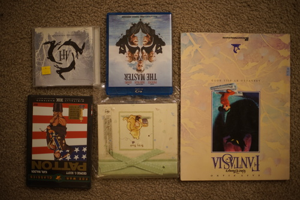

Verona got a new teal blue shirt. I struggled so hard to get that V neck collar perfectly aligned... but I either forgot or didn't care to fix the sleeve holes on the pattern! Very dumb of me. I have plenty more of my sister's old shirts to recycle though.
My machine started skipping stitches again. It might be time for a new hobby focus until spring. I think I can get it to struggle for just a little longer. It snowed today so that is a very bad sign.
I swapped Verona's eyes with Cheby and gave Cheby Liam's old eyes. They're both 14mm. I like the light blue in Liam, but 12mm looks better in him. 16mm looks moe in V, but he looks too moe next to Liam! They look too strange together.

I'm honestly really unhappy with the State of Verona. I don't have a solid idea of how I want him to look or what I want to do with him. My original idea for him when I was a kid is completely different than I want now. I think I want him to look more mature than the baby I had in mind at first.
I'm actually surprised at how into Cheby I am! He looks so kakkoi!!! I might have to look at some more vkei boys for inspiration.
For Ryan.
For Ryan.
For Ryan.
This one has been around for a while and I kept thinking about it but wasnt sure it was worth getting. I looked up a music video from the album on youtube and thought it would be fine for $1. I didn't know until I listened to it that I did know a song off it! Miss Murder is on this one. Ryan's opinion: "I liked your room better when it was playing nu metal and not emo"
I came across a new small BJD brand called "babylovechild". I'm like half tempted to email her and tell her that's a bad name. All the pieces are nice and cute, but it's not as cute combined. Does she even want my english speaking opinion? Chicabi also ran into this issue years ago and made a change for the better.